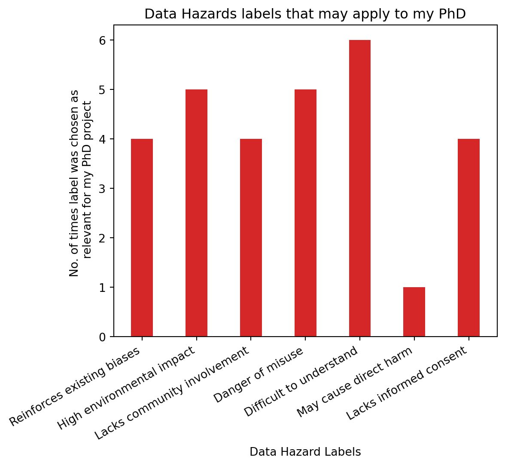

4 A Case Study in Ethical Reflection: Data Hazards in this PhD
As discussed in more detail below, the Data Hazards initiative was developed as a community-driven, shared vocabulary to identify and address risks and potential harms in data science (Zelenka et al. 2023). This project aims to mitigate risks by helping researchers recognize potential ethical challenges that may not have been initially considered and explore strategies for addressing them. While data scientists are typically trained to solve technical problems, ethical considerations are often overlooked. The Data Hazards project seeks to foster a cultural shift in research by encouraging a wider adoption of ethical considerations within the science community, promoting a more responsible and socially aware approach to scientific work.
As part of my ongoing effort to assess the broader implications of my research, I encountered the Data Hazards Project in 2021. Since then, I have progressively applied the Data Hazards framework to my PhD research. In addition to incorporating Data Hazards into my own research, I have facilitated several workshops on the topic (Roman-Garcia et al. [2022] 2022). In 2023, I co-organised and co-hosted a one-day symposium focused on Data Hazards, ethics, and reproducibility. Furthermore, I co-authored a chapter on Data Hazards to The Turing Way handbook (Turing Way Community et al. 2019).
The work that ultimately led to the development of the paper “Data Hazards as an Ethical Toolkit for Neuroscience” was preceded by an earlier collaboration with the Data Hazards team. As part of this, I designed a poster for AI UK 2023 that followed the methodology outlined in Method 1 of the (Roman Garcia [2023] 2023). This poster served as an interactive tool, enabling reflective discussions with conference attendees who were invited to engage by selecting Data Hazard labels they felt were applicable to my PhD project.
Interestingly, not all labels were chosen as applicable to my project (Figure 4.1). Only 6 of the 11 current labels were chosen as relevant, with “difficult to understand” being the most prevalent one, chosen by 6 people. High environmental impact and danger of misuse follow in closely with 5 people having chosen these ones. Of course these numbers are small and hold, more than anything, illustrative value as to how and why people may think certain labels apply to a project. Difficult to understand” label was chosen the most, followed by “high environmental impact” and “danger of misuse”. Throughout the discussions, each person — myself included — brought their own assumptions about which issues mattered more or less and why. Disagreements around the application of the Data Hazard labels continued during the follow up, in-depth collaborative work for the paper presented below. While consensus wasn’t always reached, these discussions gave rise to meaningful conversations about the ethical dimensions of the project.
I include these results not as definitive data, but to show the kind of reflective, participatory work that led up to the paper. This approach embodies the core aim of the Data Hazards project: to create space for collaborative dialogue, invite critique, and support researchers in actively thinking through the ethical implications of their work.
All of this work culminates with this PhD and the paper I present below, where we extend the application of the Data Hazards framework to the field of Neuroscience, exploring how these hazard labels can highlight ethical challenges in computational modelling, specifically focusing on my PhD as a case study. The following paper demonstrates how I have identified risks of my work as well as the efforts taken to mitigate them.
The development of this chapter and its associated publication was a collaborative effort, and I would like to acknowledge the contributions of each co-author using the Contributor Roles Taxonomy (CRediT) (https://credit.niso.org/):
Nicola Romanò contributed to the conceptualization of the work, provided supervision, and was involved in both the original drafting and reviewing and editing of the manuscript.
David C. Sterratt supported the conceptualization and provided supervision, as well as contributing to the review and editing of the manuscript.
Melanie I. Stefan was involved in the conceptualization, secured funding, provided supervision, and contributed to both the original drafting and reviewing and editing of the manuscript.
Nina Di Cara contributed to conceptualization, methodology development, and participated in reviewing and editing the manuscript.
Ceilidh Welsh was involved in the original drafting, reviewing and editing, and also contributed to conceptualization, funding acquisition, and visualisation (including the graphical abstract).
I, Susana Román García, contributed to the original drafting, reviewing and editing, conceptualization, funding acquisition, and visualisation (graphical abstract). I also played a key role in project administration, overseeing the execution and coordination of the paper.
I am deeply grateful to all co-authors for their collaborative spirit, critical insights, and valuable contributions to both the paper and the thinking that shaped this chapter.
Conclusion
This chapter has detailed my journey with the Data Hazards framework, from initial engagement and community-driven activities to the co-authorship of a publication applying the framework within Neuroscience. Through workshops, symposiums, and collaborative writing, I’ve sought to embed ethical reflection into the core of my research practice. The culmination of these efforts is the paper “Data Hazards as an Ethical Toolkit for Neuroscience”, which not only applies the framework to my PhD research but also proposes Data Hazards to better suit the nuances of ethical discussions and risks in Neuroscience. This work demonstrates how a PhD project such as this one can create space for critical reflection on the potential consequences of scientific research, and contribute to improving research integrity more broadly.